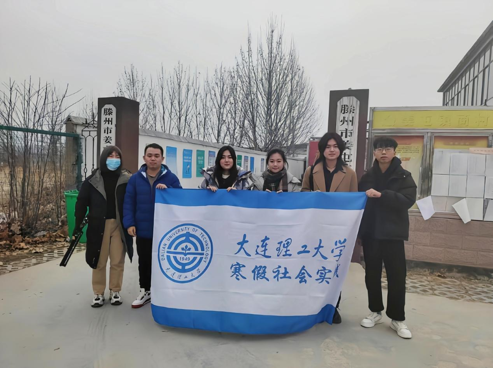
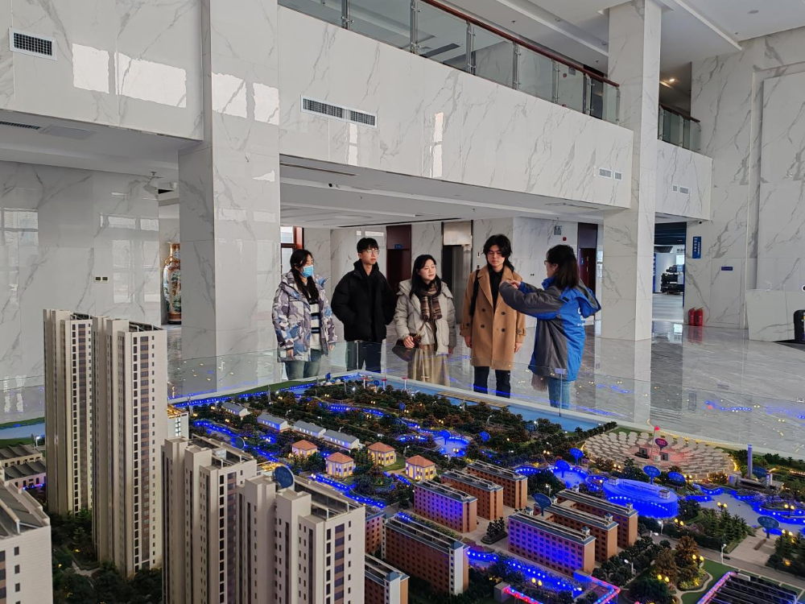
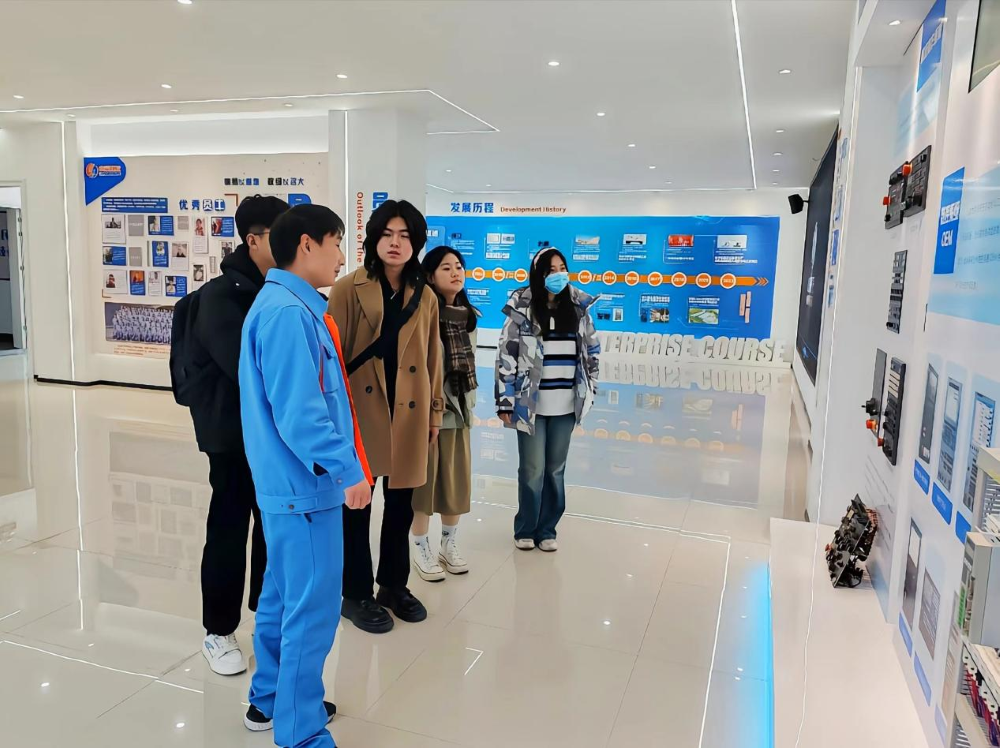

科创兴国的号角唤醒崭新的岁月，迎冬绽放的腊梅书写新春的气息。来自大连理工大学的“紫韵 · 星火”实践团来到了山东省滕州市，以昂扬的青春面貌感受时代变化。以向上的青春姿态发挥自身力量。
开展乡村调研，了解卫生状况
人民群众是国家发展之根本，乡村医疗是国家补贴之重点。
为了明晰科技赋能卫生医疗发展的方向，紫韵·星火实践团从基层着手了解当地卫生状况，来到了姜屯镇商村。实践团队分为两个小组各自展开针对当地医疗卫生层面的调研，调研方式主要有发放调查问卷、访谈等。调研范围覆盖广泛，各类年龄段及性别群体均纳入研究范畴。
图为实践团在商村的合影
通过实地调研，实践团了解到当地的医疗卫生条件尚不完善，具体表现为：本地只有一所能够治疗常见轻微疾病的卫生室，对相对严重疾病的救治能力微弱；设施设备欠缺且医疗场地不足等。
走访中科蓝天，技术赋能创新
科技创新及科创兴国已成为当今发展之势。我国国家科技部、财政部发布的文件强调，需关注企业创新能力的关键环节，突出问题导向，实施精准策略，加大激励力度，优化创新服务，提振发展信心，引导和支持各类企业将科技创新作为核心竞争力。
为了深入了解企业创新思维，探寻科技创新研究在医疗卫生领域的建设方向，实践团来到了山东中科蓝天科技有限公司。
图为实践团走访山东中科蓝天科技有限公司
实践团来到公司进行参观。在了解公司概况后，实践团与中科蓝天的技术研发人员就技术细节及未来发展进行了深入交流。研发人员表示，公司始终坚持科技创新作为核心竞争力，积极响应国家科创兴国战略，以技术研发为基础，以市场需求为导向，推动新能源技术在卫生、环保等领域的广泛应用。实践团成员纷纷就关心的技术问题向研发人员请教，双方互动热烈，交流成果丰硕。
走访山森数控，科技引领未来
对聚力加快转变发展方式、优化经济结构、转换增长动力的山东来说，专精特新“小巨人”企业是强链补链固链的生力军，更是经济活力的主要载体。作为国内最大的数控机床操作面板生产企业，山东山森数控技术有限公司在其中发挥着不可磨灭的作用。
实践团来到了山东山森数控技术有限公司，参观了其生产车间，了解了企业的发展历程、产品研发和市场运营等情况。在了解到山森数控始终坚持技术创新，以客户需求为导向，推动数控技术在制造业的广泛应用后，实践团成员深感科技创新在推动产业发展中的关键作用。
图为实践团走访山东山森数控技术有限公司
随后，实践团与山森数控的技术人员进行了座谈交流，就企业如何应对市场变化，保持竞争力，以及如何在技术创新中发挥主体作用等问题进行了深入探讨。双方还就数控技术在智能制造、绿色制造等领域的应用前景展开了广泛交流，共同探索科技引领未来的发展路径。
 返回
返回